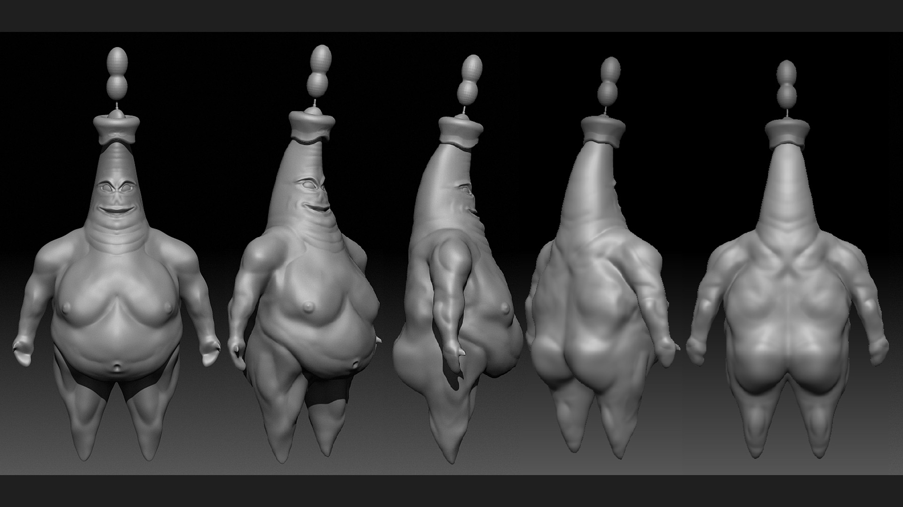
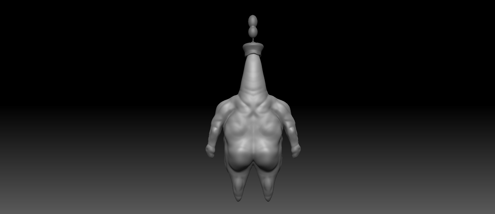
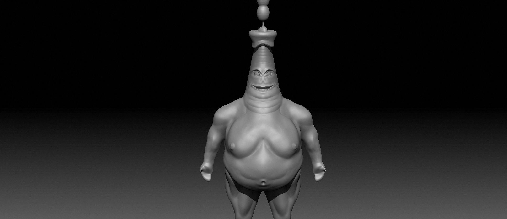
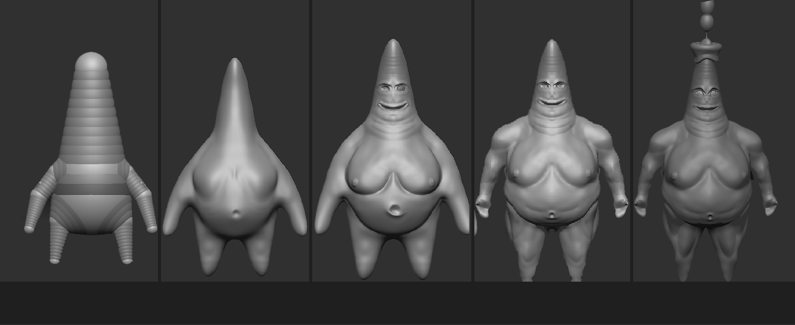
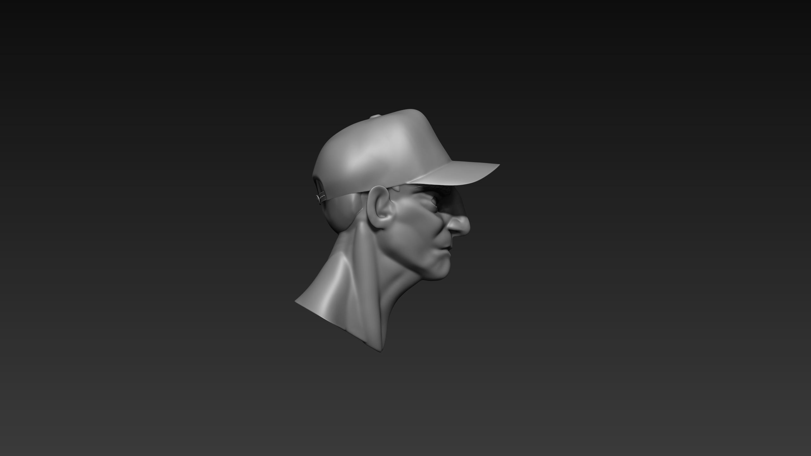
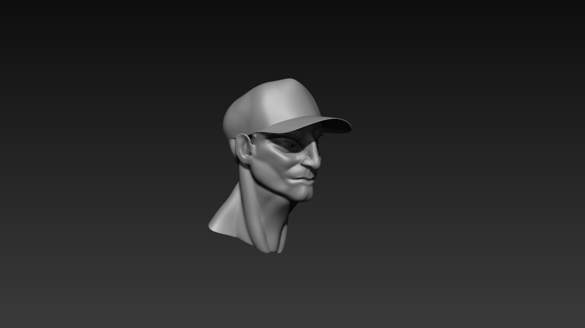
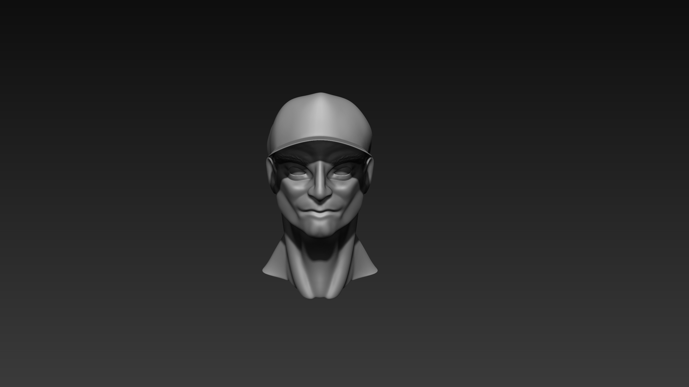
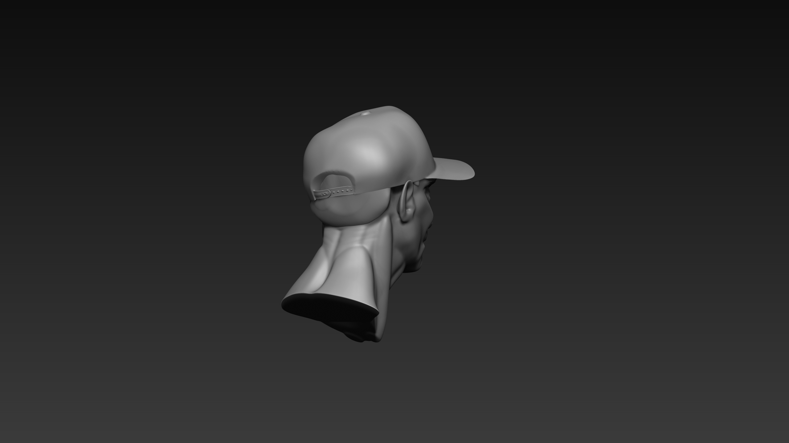

These were some organic sculpting assigments. Organic modeling has never been my strong suit, but this Zbrush class was a great time to experiment. Some say I took the experimentation too far...but I dont think I took it far enough.
One of my few characters created is no other but Jacktrick Star.
My anatomy is difficult...but I had fun trying to create various muscles following reference images.
Never skip out on back day...
...or the glutes if you want those iron buns.
This project was a total meme, but I enjoyed the process in creating it.
A small breakdown of my process.
Marmoset turntable of this monstrosity.
A more normal sculpt of a semi-stylized human face.
Eyes and ears are what I found most difficult about sculpting humanoid creatures.
Totally not hiding the fact that I did not want to create hair with a hat...
